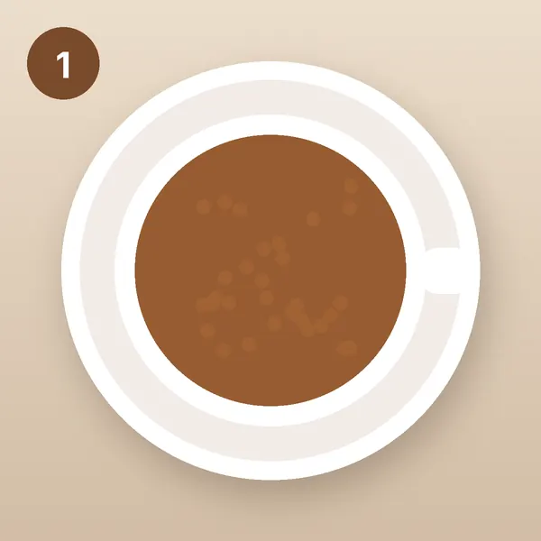
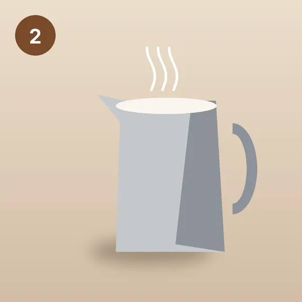
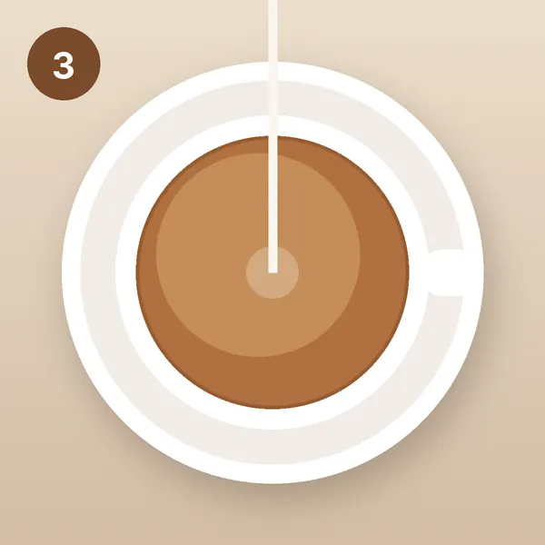
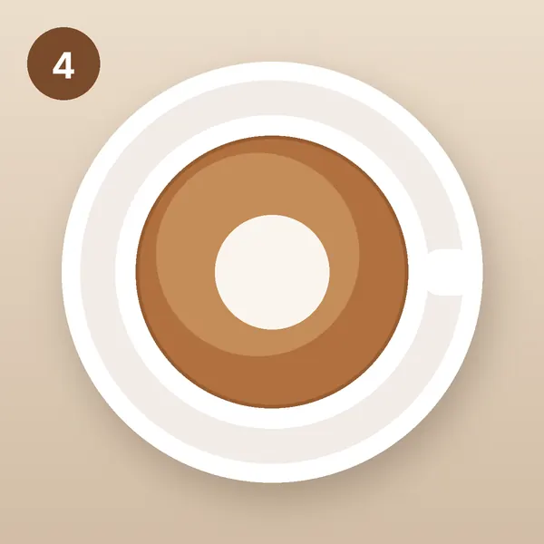
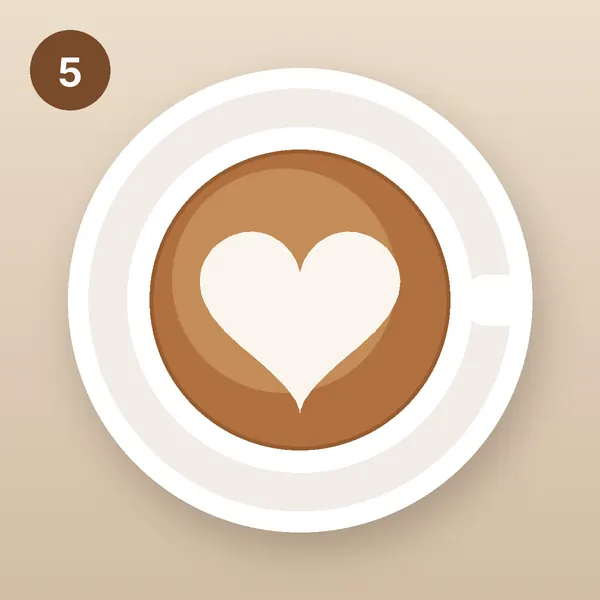

Гид от школы бариста «Зерно 7»
Сердце на капучино за 5 шагов
Латте-арт — это рисунок на поверхности напитка из взбитого молока. Сердце — первый рисунок, с которого начинают все бариста.
Пять шагов
-

Шаг 1
Приготовьте эспрессо
Приготовьте эспрессо — крепкий кофе, который кофемашина готовит под давлением, — в широкую чашку для капучино на 300 мл. Сверху должна быть плотная коричневая пенка.
-

Шаг 2
Взбейте молоко
Налейте холодное молоко в питчер — металлический кувшин с носиком. Взбейте его паром до 60–65 °C: пена должна быть гладкой и блестящей, без крупных пузырей.
-

Шаг 3
Влейте основу
Наклоните чашку и тонкой струйкой с высоты 5–7 см влейте молоко в центр, пока чашка не заполнится наполовину. Молоко уйдёт под пенку и не испортит рисунок.
-

Шаг 4
Нарисуйте круг
Опустите носик питчера к самой поверхности и лейте быстрее. На поверхности появится белое пятно — плавно выравнивайте чашку, и пятно вырастет в круг.
-

Шаг 5
Превратите круг в сердце
Поднимите питчер выше и тонкой струйкой проведите линию через центр круга к краю чашки. Круг вытянется в сердце. Готово!
Скачать гид PDF
Все 5 шагов на одной странице — распечатайте и держите рядом с кофемашиной.
Промокод на курс латте-арта
Назовите промокод при записи на курс «Латте-арт» или укажите его, когда мы вам позвоним.
LATTE10
Хотите рисовать тюльпан и розетту?
Курс «Латте-арт» — 3 занятия, 8 900 ₽. Потоки: 7 декабря 2026 и 20 января 2027.